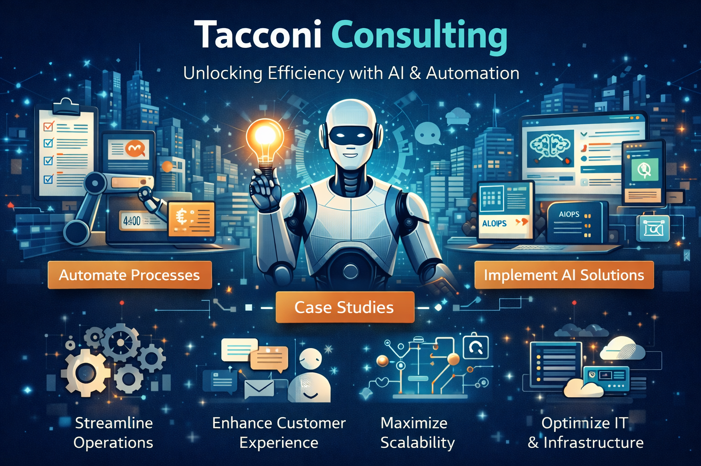

Platform transformation engineering — from infrastructure to software — powered by automation and AI.
We help teams design, build, and operate reliable platforms, and accelerate software delivery with spec-driven code generation and pragmatic AI workflows.
Services
Two focus areas: proven infrastructure delivery, and emerging AI engineering capabilities.
Infrastructure services
Kubernetes (including bare metal), GitOps (e.g. Argo CD), platform engineering, and day-2 operations. Deterministic upgrades, runbooks, and operational clarity. Linux, virtualisation, AWS where it fits.
AI engineering
Spec-driven code generation from specs; scaffolding, clients, tests, and contracts with human review and CI gates. Structured support for legacy modernisation and pragmatic AI adoption.
Use cases
Automata — distributed edge-to-cloud platform: AWS EKS control plane, Temporal workflows for cluster lifecycle, Talos at the edge, Terraform and Argo CD.
How we work
Same discipline across infrastructure and software: discovery → architecture → implementation → handover.
- Automation and CI from the start; documentation and runbooks as deliverables.
- For AI-assisted work: human-in-the-loop, tests first, CI gates before merge.
Who we help
- Platform and infrastructure teams that need reliability and clear ownership.
- Regulated or on-prem environments where control and auditability matter.
- Teams modernising legacy estates with a structured approach.
- Organisations looking for pragmatic AI adoption—without hype.
Start a conversation
Discuss a project or explore how we can help.